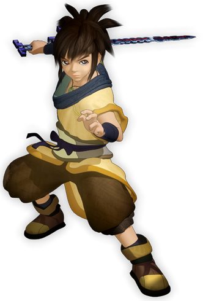
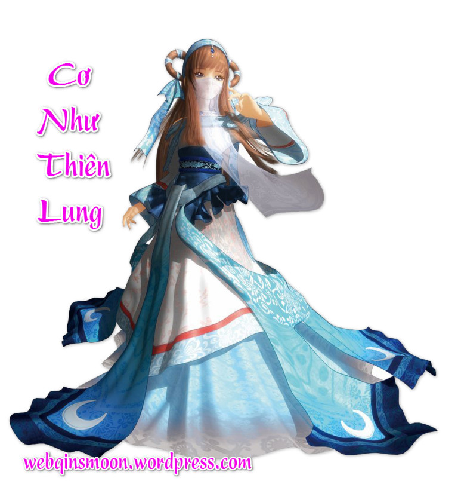
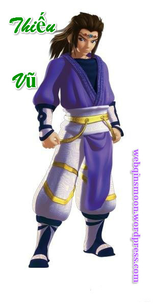
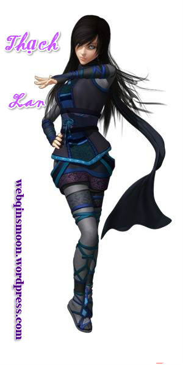

Nhân vật chính
|  |
Kinh Thiên MinhNam chính thứ nhất. Phụ thân là kiếm khách Kinh Kha, mẫu thân là Lệ Cơ. Bề ngoài lơ mơ không hiểu biết nhưng trên nhiều phương diện như võ công, cơ quan thuật... đều có thiên phú cực cao. Mất trí nhớ lại thêm cảnh đời bị Tần truy sát, thân phận mơ hồ khiến cho khắp chốn đại địa phong vân biến chuyển. Theo học kiếm thuật và kính ngưỡng Cái Nhiếp như phụ thân. Trong quá trình trốn chạy dần dần tôi luyện trưởng thành, lần lượt kết bạn với nhiều cao nhân giang hồ, liên tiếp kết hảo hữu với Thiếu Vũ, Cao Nguyệt, Thạch Lan cùng lứa tuổi, cũng chứng kiến chốn yên bình cuối cùng trên thế gian là Mặc gia Cơ quan thành bị hủy diệt, còn dưới cơ duyên xảo hợp trở thành Mặc gia Cự Tử. Là người tinh ranh cổ quái lại có thêm chút không biết trời cao đất dày, nhưng rất có tinh thần chính nghĩa và vô cùng quý trọng đồng bạn, luôn hy vọng được cống hiến vì sự nghiệp phản Tần, cũng hy vọng có thể sớm cứu được thanh mai trúc mã của mình là Cao Nguyệt. |
|---|---|
|  |
Cao Nguyệt (Cơ Như Linh Lung)Nữ chính thứ nhất. Con gái Yên Đan, phong hiệu "Cao Nguyệt công chúa". Dịu dàng uyển chuyển, yêu thích hòa bình. Sau khi nước Yên diệt vong trải qua cuộc sống bình dân, nhưng giữa lời nói cử chỉ vẫn một luồng khí chất cao quý bẩm sinh. Tinh thông văn hóa các quốc gia và y thuật, dược lý, là trợ thủ đắc lực của Đoan Mộc Dung Mặc gia, cũng có thiên phú cực cao về Âm Dương thuật. Sau khi bị Nguyệt Thần bắt đi, bị ép trở thành thành viên chủ yếu trong Âm Dương gia, cũng được Đông Hoàng Thái Nhất cho biết "Họ Cơ tên Như, tự Thiên Lung" có huyết mạch của gia tộc họ Cơ tôn quý nhất đã kéo dài cả ngàn năm, là nhân vật then chốt để hiểu rõ về "Thương Long Thất Tú". |
|  |
Hạng Thiếu VũNam chính thứ hai, Tây Sở Bá Vương Hạng Vũ trong tương lai. Cháu của danh tướng Hạng Yên nước Sở, thiếu chủ của tộc Hạng thị. Trí dũng song toàn, tâm tư tinh tế, thiên phú dị bẩm, có thần lực nâng đỉnh ngàn cân. Là người trượng nghĩa, tuy tuổi còn nhỏ nhưng khi lâm trận đối địch đã có phong độ của một đại tướng. Dẫn dắt toàn tộc và các minh hữu như Mặc gia cùng nhau phản Tần. Cùng Thiên Minh không đánh không quen biết, vừa là hảo hữu vừa là đối thủ cạnh tranh. |
|  |
Thạch Lan(Tiểu Ngu)Nữ chính thứ hai, thiếu nữ thần bí tới từ Thục Sơn phía Tây. Bề ngoài là người làm thuê chạy vặt trong khách sạn của Bào Đinh, có vẻ ngoài nhu nhược, lặng lẽ để ý tới mọi chuyện phát sinh xung quanh. Thân phận thực là Ngu Uyên Hộ Vệ của Thục Sơn, gánh vác sứ mệnh quan trọng. Thân thủ nhanh nhẹn, thân nhẹ như yến, nội tâm có tinh thần chính nghĩa và tín ngưỡng dân tộc mạnh mẽ. Luôn trầm mặc ít nói đối với người ngoài, sau dần dần cùng Thiếu Vũ, Thiên Minh trở thành hảo hữu tương trợ lẫn nhau, nảy sinh hảo cảm với Thiếu Vũ. |